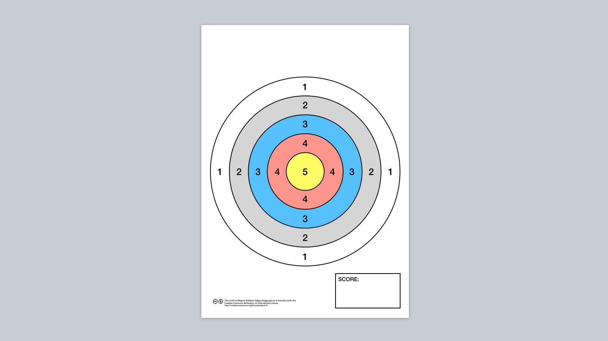

Do some target practice in your next retrospective
... and get your printable “shooting target” here

Regardless of whether you use a print-out (for example using my template below :) or draw one on a whiteboard, a shooting target can be a simple but versatile tool for scoring pretty much anything in your retrospectives.
Here are some examples of how I have used it:
-
Measuring how well all the scrum events (sprint planning, daily scrum, sprint review and sprint retrospective) and scrum artefacts (product backlog, sprint backlog, product increment) are working.
-
A quick and visual way to gather the results from a team health-check, for example as an alternative to the traffic-light cards used in the Spotify Squad Health Check.
-
As a check-in at the start of the retrospective, asking “how was the last sprint?”.
-
Answering the question “How useful was this retrospective?” by letting the participants put a mark on their way out.
How to use the shooting targets
-
Print a sheet for each thing you want the participants to score, either on A4 or A3 paper. Write on each sheet what it represents.
-
Fix the sheets to the wall. Make sure to spread them out a bit so it doesn’t get too crowded when people place their scores.
-
Hand out sticky dots or markers to all participants and let them mark their score on each sheet. Using one colour per person will make it easier for people to make sure they mark their score on every sheet.
-
Get help from the team to add up the scores. Make sure to be consistent: if a dot is on a line, does it count as the higher or lower score?
Using the result
Ok, you’ve gathered the scores. Now what?
To give everyone a good overview of the result, you may want to first move all the targets close together or even arrange them by score.
Then, if you used more than one target, identify together what to focus the rest of the retrospective on. This could be as simple as just going with the lowest scores or you could do a dot vote.
My favourite way to use the result is to ask “For this to be a bull’s eye, what should we do differently?”. An exercise like The Agile Starfish (things to start doing, stop doing, do more, do less or keep doing) tends to work really well for this purpose.
Downloads

Back to blog

This work by Magnus Dahlgren is licensed under a Creative Commons Attribution 4.0 International License.